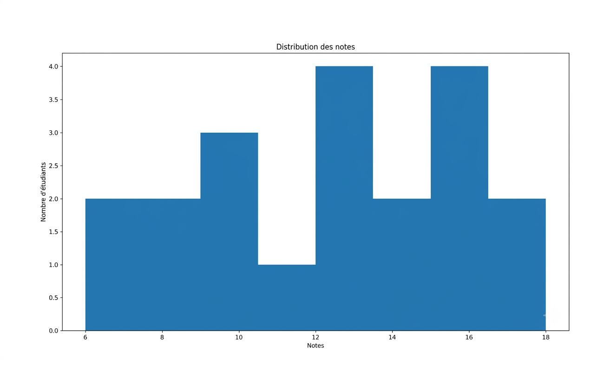
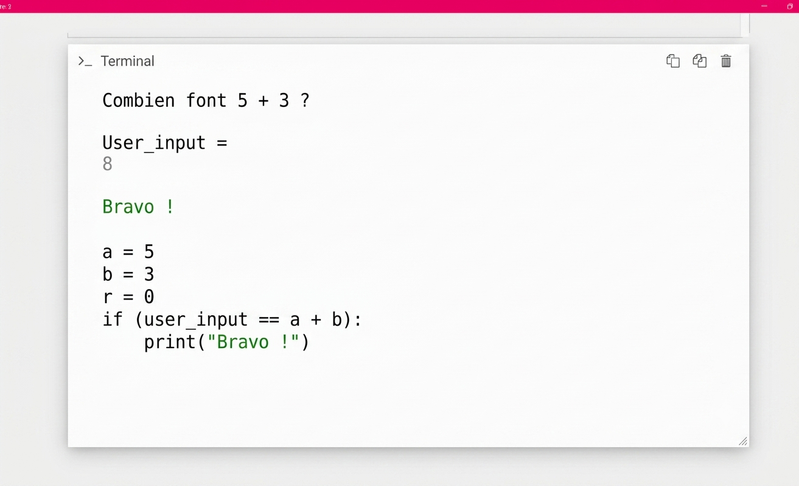

Développement complet d'une interface de présentation des menus et de commande pour un restaurant.
Technologies : HTML5, CSS3, Terminal Git, GitHub
Ce projet m'a permis d'apprendre à utiliser le terminal Git pour la gestion des versions à travers ses commandes fondamentales (git init, git add, git commit). Nous avons ensuite connecté notre dépôt local à GitHub (git remote, git push) afin de centraliser le code et de déployer le site en ligne de manière professionnelle.

Analyse Statistique des Notes Scolaires
Réalisation d'une étude statistique descriptive sur les résultats des étudiants afin d'analyser les performances.
Application concrète des concepts de statistiques et probabilités vus en cours : traitement des données, calcul des moyennes, variances, et création d'un histogramme de distribution pour visualiser la répartition globale des notes des élèves.

Algorithme Éducatif en Python
Développement d'un script Python interactif et simple (type mini-jeu de logique ou calcul numérique) adapté aux enfants.
Ce projet naturel de première année pose les bases de l'algorithmique. Le programme interagit directement avec l'utilisateur dans le terminal, vérifie la validité de ses réponses grâce à des structures conditionnelles, calcule et affiche un score final à la fin de la session.